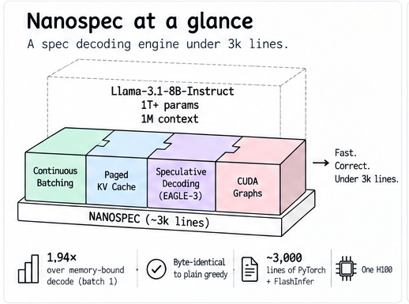
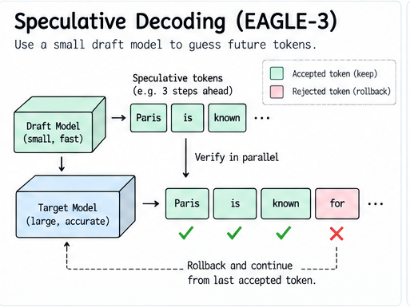
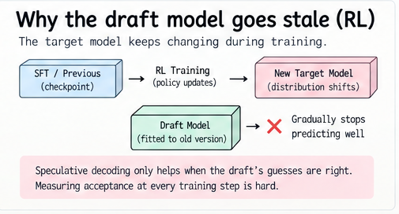
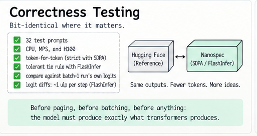
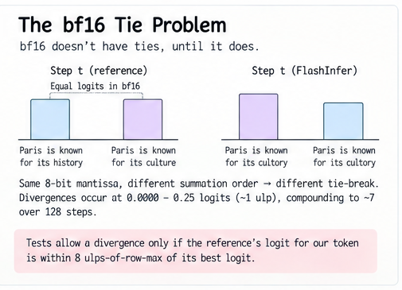
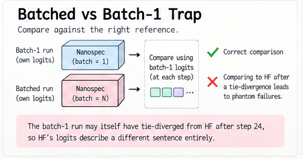
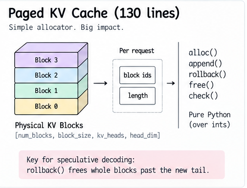
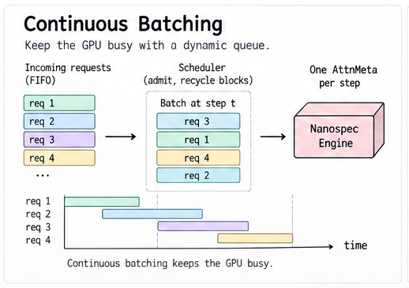
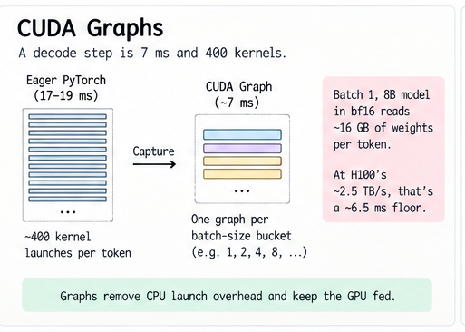

Nanospec: a spec decoding engine in under 3k lines


§ 01Why nano spec
Here’s the question that started this. Speculative decoding uses a small draft model to guess what the big model will say next, and it only speeds things up when the guesses are right. But when you train the big model with RL, it keeps changing, and a draft fitted to last week’s version slowly stops predicting it.

vLLM and SGLang both do speculative decoding well. But answering this means measuring acceptance at every training step, which is hard. You know what is harder? Writing your own engine from the ground up :)

So nanospec exists to be small enough to read and rigid enough to trust. Every invariant has a test, and the first invariant is the strictest one.
§ 02Making it correct
Before paging, before batching, before anything: the model must produce exactly what transformers produces. Not “close”. Bit-identical. If it isn’t, every later test is comparing against noise.
It’s achievable, but only by copying Hugging Face’s exact order of operations, down to where each rounding happens. Once that’s done, all 32 test prompts match token-for-token and logit-for-logit on CPU, MPS, and H100.

First everything was SDPA and unfused ops. Then I switched attention to FlashInfer and the first H100 run failed 50 of 139 tests. T_T
bf16 doesn’t have ties, until it does
Every failure was a coherent alternative continuation: “Paris is known for its history” vs “its culture”. The reference and nanospec had both picked a plausible next token; they had just picked different ones. At those steps, HF’s top-two logits were exactly equal in bf16 — the same 8-bit mantissa — and FlashInfer’s kernel, summing in a different order, tipped the tie the other way. From that step on the two texts are legitimately different.

I measured it properly (tests/diag_numerics.py): SDPA vs HF is 0.00 ulps everywhere; FlashInfer vs HF is ~1 ulp of the row’s largest logit per step, compounding to ~7 over 128 steps as each step’s slightly-different K/V feeds the next. Every single divergence in the suite sits on a gap of 0.0000–0.25 logits.
So the tests have two modes. With the SDPA backend, equality is strict. With FlashInfer, a divergence is tolerated only if the reference’s logit for our token is within 8 ulps-of-row-max of its best logit.
record_logits=True to the reference engine.
§ 03Paged KV, in 130 lines
The allocator is pure Python over ints: a free list, and per request a list of physical block ids plus a length. alloc, append (grabs a block only when crossing a boundary), rollback (frees whole blocks past the new tail — this is the primitive speculative rejection needs), free, and check(), which asserts every block is in exactly one place. The paging test allocates fifty random requests, frees every other one, and only then starts the correctness prompts.

check() that makes every invariant a test.The tensor side is [num_blocks, block_size, kv_heads, head_dim] per layer (FlashInfer’s NHD layout) and one object per step, AttnMeta: for each request the query positions, the slots to write, how much KV to attend, and an optional mask. Writing K/V is a single index_put into the flattened block dimension — no scatter kernel to get wrong.
One rule that paid for itself: the cache is zero-initialised, not torch.empty. Masked-out slots are still read by the kernel; garbage in a slot the mask should hide is still garbage that a NaN can climb out of.
§ 04Batching is where GEMMs stop being functions
Continuous batching itself was uneventful — the scheduler decides what runs (FIFO admission; one request finishes, its blocks go back), the engine turns the batch into one AttnMeta. But its test taught me something I’d read about and not believed: the same row through a GEMM gives different bits depending on how many other rows are in the batch.

On MPS the lm_head GEMM is batch-invariant up to 12 rows and not at 13; cuBLAS picks split-K by M. The batched-vs-batch-1 test therefore inherits the tie rule too. There is no honest way around this short of batch-invariant kernels.
§ 05CUDA graphs: a decode step is 7 ms and 400 kernels
At batch 1, an 8B model in bf16 reads 16 GB of weights per token. At the H100’s ~2.5 TB/s, that sets a floor of ~6.5 ms. Eager PyTorch took 17–19 ms because a 32-layer forward is ~400 kernel launches, and the CPU can’t issue them fast enough.

The graph runner captures one graph per batch-size bucket {1, 2, 4, 8, 16, 32, 64}. Each graph has static buffers for tokens, positions, slots, and FlashInfer’s index and mask data. Every step runs plan() on the host (0.16 ms), copies inputs into those buffers, and replays the graph. A batch smaller than its bucket gets padding rows that write to a reserved pad block. The result is 7.3 ms per step, close to the floor.
FlashInfer’s fused RMSNorm and RoPE kernels cut each layer from ~15 kernels to ~4. They round once where HF rounds twice, though, so the SDPA oracle doesn’t use them. A teacher-forced test staggers arrivals and finishes so the batch crosses every bucket in both directions. Over 112 steps, the worst graph-vs-eager difference was 2.3 ulps.
§ 06EAGLE-3, from the head’s point of view
The draft model, yuhuili/EAGLE3-LLaMA3.1-Instruct-8B, is a single Llama layer. At position i, it takes two inputs: the target’s hidden states at the inputs of layers 2, 16, and 29 (12288 dims, projected to 4096), and the embedding of token i+1. From those, it predicts token i+2 over a 32k vocabulary. d2t maps draft tokens back to the target’s 128k vocabulary as an offset, target = draft + d2t[draft]. Used as a direct index, it produces plausible-looking garbage. For deeper steps in a chain, the layer’s own pre-norm output replaces the target’s hidden state.
The tests caught two mistakes in my thinking:
- Low acceptance wasn’t a bug. On raw prompts the head accepted only 0.6 drafts per step. A teacher-forced probe showed 80% top-1 accuracy on chat-templated input, and my configuration was the best of six variants. That configuration used taps 2/16/29 and RoPE θ = 10000 from the head’s own config, not the target’s 500000. The head was trained on conversations, and on MT-Bench with the chat template a chain accepts 2.66 tokens per step. Acceptance depends on the workload.
- Losslessness doesn’t depend on draft quality. A random head accepts nothing and must still match greedy exactly. To test partial accepts locally, the tiny model drafts for itself, with a wrong token forced in at every third position.
§ 07The tree: 30 draft tokens verified in one forward
A depth-5 chain verifies 6 rows per step. A topk × depth tree verifies 1 + topk·depth rows, and each row attends only to the prefix, the root, and its own ancestors. Nodes are picked the EAGLE-2 way: expand each node’s top-k children, then keep the global top-k by cumulative log-prob.
kv: prefix ....... | root | n0 n1 n2 n3 | n4 n5 ...
row n0 ######### # #
row n4 ######### # # # (parent n0)Verification walks down from the root, following whichever child matches the target’s argmax, until no child matches. The argmax at the last accepted node becomes the bonus token. The accepted path’s K/V is then copied from scattered tree slots into contiguous positions. Nodes are stored level by level, so every source slot sits at or after its destination, and the copy can’t overwrite data it still needs. A test compares the resulting cache against a fresh prefill, layer by layer. Drafting uses the same masks: siblings at a level share a RoPE position but occupy different slots, and they can’t see each other.
Two FlashInfer quirks each cost a day. First, FA3 doesn’t support custom masks. On trees it raises an error. Worse, in the graph runner an all-causal chain batch silently ran with no mask, so verify rows saw the future (137 ulps). The fix is backend="fa2" for masked wrappers and always materializing masks. Second, the decode wrapper names its buffer kwargs _buffer, while the prefill wrapper uses _buf.
§ 08The number, and what it isn’t
Batch 1, chat-templated MT-Bench, H100, every configuration byte-identical to plain greedy:
| configuration | tok/s | tokens/step | vs no-spec |
|---|---|---|---|
| no speculation + graphs | 137 | 1.00 | 1.00× |
| chain, depth 5 | 252 | 2.88 | 1.83× |
| tree 4 × 5 | 253 | 3.77 | 1.84× |
| tree 6 × 5 | 266 | 3.92 | 1.94× |
A 6×5 tree step takes 14.3 ms:
- Verify: 8.3 ms. 30 rows cost the same as one because weight reads dominate.
- Accept: 0.2 ms.
- Extend: 1.1 ms.
- Four draft levels: 4.7 ms.
The drafting is where the 2× went. Its GPU work is under 1 ms. The rest is each level sending its tokens back to the host to build the next mask while the GPU sits idle. I tried two fixes and reverted both. Host-side micro-optimizations didn’t help, because profiling showed only 0.4 ms of host work in total. Dense in-graph attention for the draft was no faster, and it was 40–90 ulps off.
The real fix is building the whole tree on the GPU with a single sync, like SGLang’s build_tree_kernel. That’s the first v1.0 item, and the 2× test is marked xfail with that reason instead of a lowered bar.
nanospec also lacks several things the production engines have:
- No prefix caching, chunked prefill, or FP8 KV.
- Greedy verification only.
- A fixed tree of at most 32 tokens, where SGLang uses 64 with dynamic pruning.
Benchmarks against vLLM and SGLang come next; the harness is in bench/.
epilogueTrust the oracle, then measure the kernel
Every hard bug in this project was a numerics bug wearing a logic bug’s clothes. A tie in bf16 looks like a wrong token. A split-K choice looks like a batching bug. A missing mask looks like a broken tree. The only reason any of them were findable is that there was a bit-exact SDPA path to fall back to, and a measured number — ulps of row max — to say how far off “off” really was.
Build the slow, exact version first. It’s the only thing that can tell you whether the fast one is wrong.